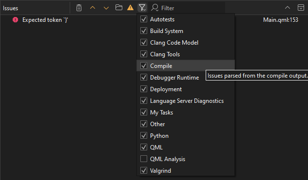
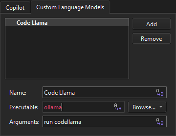

Issues
The Issues view filters out irrelevant output from the build tools and presents the issues in an organized way.
To further filter the output by type, select  (Filter Tree) and then select a filter. See the tooltips for more information about each filter.
(Filter Tree) and then select a filter. See the tooltips for more information about each filter.

To find output in the view, enter search criteria in the Filter field.
To view detailed information about the selected line (where available), select Space.
To jump from one issue to the next or previous one, select  and or F6 and Shift+F6.
and or F6 and Shift+F6.
Clear the view
By default, a new build clears the Issues view. To keep the issues from the previous build rounds:
- Go to Preferences > Build & Run > General, or select Configure in the context menu.
- Clear Clear issues list on new build.
To clear the view, select  (Clear).
(Clear).
To remove one or several lines, select them and then select Remove in the context menu.
Parse build output
To parse build output, select  (Create Issues From External Build Output).
(Create Issues From External Build Output).
Toggle Clang diagnostics
To show and hide Clang diagnostics, select (Show Warnings).
View the source code
To navigate to the corresponding source code, select an issue or select Show in Editor in the context menu. The entry must contain the name of the file where the issue was found.
Annotate issues
To open a version control annotation view of the line that causes the error message, select Annotate in the context menu.
Copy lines
To copy one or several lines to the clipboard, select them and then select Copy in the context menu.
View more information in other views
To view more information about an issue in Application Output, select Show App Output in the context menu.
To view more information about an issue in Compile Output, select Show Compile Output in the context menu.
Get help on the issue
To search the internet for a solution using the contents of a line as search criteria, select the line and then select Get Help Online in the context menu.
To ask an AI to explain the issue on the selected line, select Get Help from <AI> in the context menu. To add AIs to the menu, go to Preferences > AI > Custom Language Models and select Add.

See also View output, Add custom output parsers, Parse build output, Show task list files in Issues, and Analyze code with Clang-Tidy and Clazy.